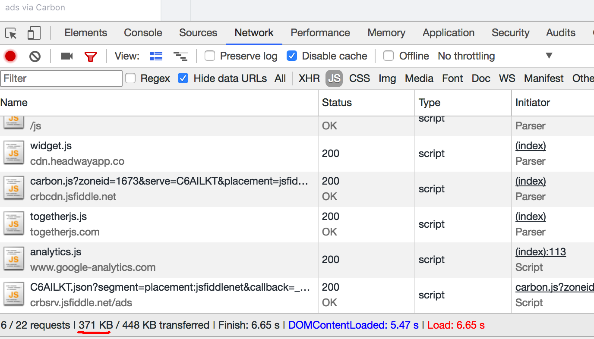
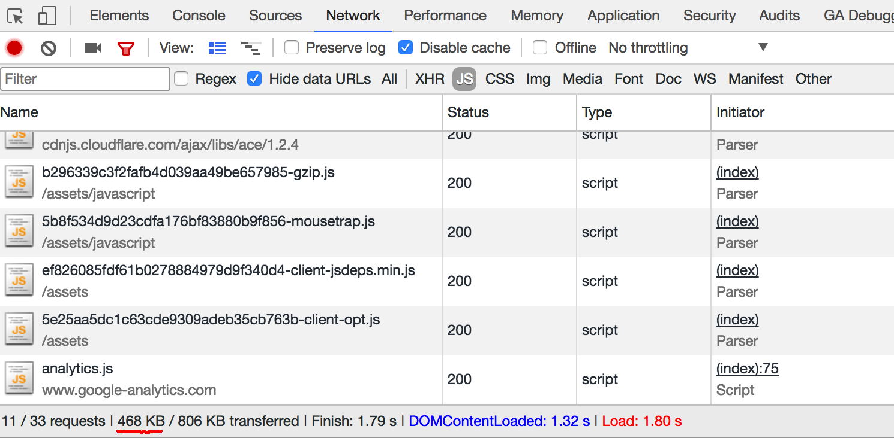

Building frontend applications with Scala.js and scalajs-react
Created by Andrii Malaman
JS Problems
- Mutability
- Weak typing
- Inconsistent semantics and behavior
- Limited amount of build-in features
| Lang |
Immutability |
Typings |
Warts |
Interop |
| ES6 |
🚫 |
🚫 |
🚫 |
✅ |
| ES6/Flow |
🚫 |
✅ |
🚫 |
✅ |
| TypeScript |
🚫 |
✅ |
🚫 |
✅ |
| Elm |
✅ |
✅ |
✅ |
⚠️ |
| ClosureScript |
✅ |
🚫 |
✅ |
⚠️ |
| Scala.js |
✅ |
✅ |
✅ |
✅ |
What JS need to match Scala.js build-ins
- ES6
- TypeScript
- Immutable.js
- Rambda
Scala.js features
- Scala code compiled to JS
- Full* support of Scala language
- High performance
- Reasonable JS bundle size
- JS interoperability
- Reach ecosystem
- SBT support
Scala.js limitations
- Reflection is not supported
- Enumerations.Value() method is not supported
- Await is not supported
- Regular expression works as JS regular expressions
- Heavy scala.Symbol usage could cause memory leaks
jsfiddle.net bundle size

scalafiddle.io bundle size

Ecosystem - Package types
-
Ported packages
-
JS Facades
-
Scala.js libraries
Ecosystem - Ported packages
Ecosystem - Scala.js libraries
Frontend App tools
-
Rendering helper
-
UI events handler
-
Ajax/Websocket client
-
Data management helper
-
Router
-
Styling
-
Assets bundler
scalajs-react
-
Type safe wrapper arround React.js library
-
Router as extra package
-
Integration with cats, scalaz, monocle
-
Test helpers
Callback class
-
Encapsulates logic and side-effects
-
DOM, UI, IO actions should be wrapped with callback
-
Provides a set of utilities (.map, .log, .when/.unless)
-
Allows composition with another callbacks (flatMap, >> operator)
scalajs-react router
-
Static, Dynamic routes
-
Nested routes
-
SPA Link component
-
Conditional routes
Problems
-
Debugging is more difficult
-
Compile time on code change
-
High bus factor for ecosystem packages
-
Lack of documentation
-
Lack of marketing
When to use Scala.js
-
Imported modules in your JS application
-
Team uses scala already
-
Algoritmic tasks in browser
-
Internal applications (control panels, dashboards)
-
? Public applications (with limited amount of third-party packages)